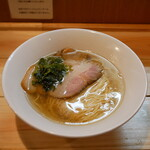

ウチデノコヅチ
| 最寄り駅：小田急線経堂駅 予算:900円～ 定休日:水曜日 TEL:03-6339-2223 住所:経堂2-3-8但馬屋ビル 1F Follow @japanesehammer |
せい家
| 最寄り駅：小田急線経堂駅 予算:650円～ 定休日:なし TEL:03-3428-9888 住所:経堂1-5-10 せい家のホームぺージ |
世田谷中華そば祖師谷７丁目食堂
|  | 最寄り駅：小田急線祖師ヶ谷大蔵駅 予算:600円～ 定休日:なし TEL:なし 住所:祖師谷1-9-14 Follow @setagayaramen1 |
タナカ ロボ
| 最寄り駅：東急世田谷線上町駅 予算:800円～ 定休日:月曜日、火曜日(祝日の時は営業) TEL:なし 住所:桜3-8-15 Follow @tanakalobo |
中華そば 西川
| 最寄り駅：小田急線千歳船橋駅 予算:1250円～ 定休日:月曜日、火曜日 TEL:090-9152-9673 住所:砧2-15-10 メゾンドオーポン1F Follow @nishikawa201709 |